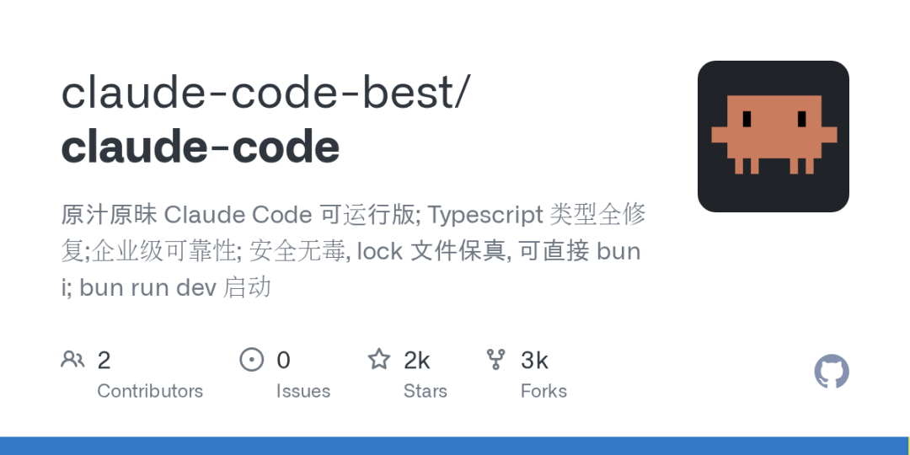
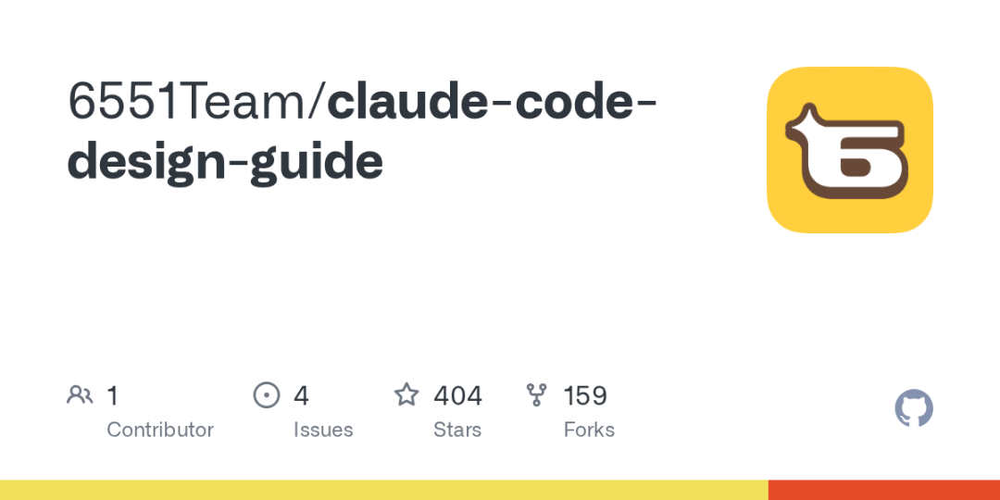
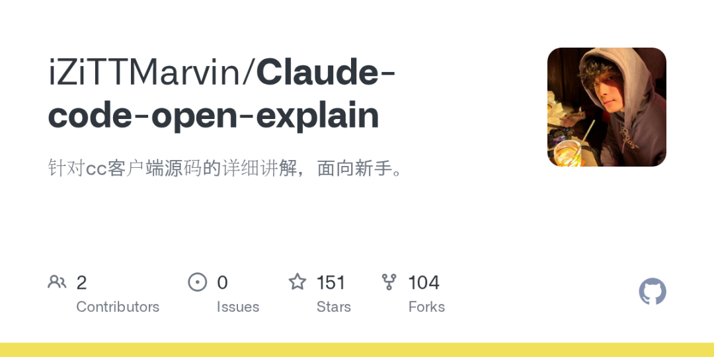

关注我，记得标星⭐️不迷路哦～
✨ 0: Claude Code Best V1 (CCB)
Claude Code CLI 逆向复现

Claude Code Best V1 (CCB) 是一个旨在反向工程并复现 Anthropic 官方 Claude Code CLI 工具核心功能和工程能力的开源项目。它提供了一个功能丰富的 REPL 交互界面，并通过 Ink 终端渲染实现高度交互性。该项目具备强大的API通信能力，支持与Anthropic Direct、AWS Bedrock、Google Vertex和Azure Foundry等主流AI服务商进行集成。其核心系统涵盖流式对话与工具调用循环、对话状态与归因管理、基于文件和Git状态的上下文构建、精细的权限控制（计划/自动/手动模式），以及对话会话恢复、系统诊断和自动上下文压缩。CCB内置了一系列实用工具，包括安全沙箱中的Bash命令执行、全面的文件操作（读、写、编辑、Jupyter Notebook单元格编辑）、子代理生成、网页抓取与搜索、用户问答、消息发送以及技能调用和任务/资源管理。值得注意的是，尽管原版Claude Code具有许多如自主代理、远程协作、语音交互和高级工作流等通过Feature Flag控制的增强功能，但CCB项目在当前版本中通过运行时polyfill将这些Flag默认关闭，专注于提供稳定且核心的命令行交互体验，并计划在后续版本中逐步完善工程化配套设施、实现多层级解耦与提升稳定性，整个项目基于Bun workspaces进行管理。
地址：https://github.com/claude-code-best/claude-code
✨ 1: Claude Code
Claude Code 非官方源码提取
Claude Code GitHub 仓库是一个非官方的 Anthropic Claude Code CLI 工具的源代码提取项目。这个仓库的核心价值在于，它公开了 Anthropic 官方 CLI 工具的 TypeScript 源代码，该源代码因 npm 包中包含的未混淆的源映射文件（cli.js.map）而被泄露。原始的 Claude Code CLI 工具旨在让开发者直接通过终端与 Claude 交互，执行文件编辑、运行命令、搜索代码库以及管理 Git 工作流等软件工程任务。本项目的目标是为教育和参考目的保存并提供这些泄露的源代码。
地址：https://github.com/chatgptprojects/claude-code
✨ 2: Rewriting Project Claw Code
代理系统核心框架重实现
“Rewriting Project Claw Code”是一个在极短时间内（发布后两小时内突破50K星）获得巨大关注的 GitHub 存储库，其核心目标是构建更优秀的代理系统 Harness 工具，而非仅仅作为泄露版 Claude Code 的存档。该项目在法律和伦理考量下，将原有的核心功能完全从零开始，以“清洁室”方式重写为 Python 版本，专注于捕捉原系统的架构模式，而非复制任何专有源代码。目前，项目正在积极将其核心功能移植到 Rust 语言，旨在实现更快、内存更安全的运行时，这将是项目的最终版本。整个重写过程高度依赖于 AI 辅助工具 oh-my-codex (OmX) 进行编排，包括并行代码审查和持续执行循环。项目提供了一个清晰的 Python 工作空间，包含用于管理端口清单、模型、命令和工具元数据，以及生成端口摘要的模块，并支持验证测试，但目前尚未完全达到与原系统等价的运行时功能。该项目明确声明不拥有原始 Claude Code 源代码，也与 Anthropic 公司无任何关联，体现了其独立的开源研究精神，并积极鼓励社区成员讨论大型语言模型和 Harness 工程。
地址：https://github.com/instructkr/claw-code
✨ 3: Claude Code 设计指南
AI Agent 运行时系统设计解析

"Claude Code 设计指南"项目是一本深入分析Anthropic官方AI编程助手CLI工具Claude Code的专业指南。该指南的核心在于将Claude Code阐释为一个完整的Agent Runtime系统，其主要功能围绕工具调用、上下文工程、多代理协作、权限管理及扩展系统展开。它通过对Claude Code源代码设计的深度解析，旨在帮助读者理解AI Agent系统从零构建的原理、现代CLI工具的工程哲学、对话式AI架构设计（如查询引擎、状态管理、消息循环），并详细介绍了工具系统设计（包含43个内置工具及权限模型）、高效的上下文处理技术（如系统提示、记忆与压缩）、多代理架构（任务系统、多代理协调器）和强大的扩展机制（MCP协议、Skills、插件系统）。此外，该指南还涵盖了安全性、权限分层设计和性能优化等关键考量，并总结了设计原则与未来发展方向，为不同经验水平的开发者提供了理解和构建AI Agent应用的全面知识框架。
地址：https://github.com/6551Team/claude-code-design-guide
✨ 4: Claude-code-open-explain
Claude Code 架构与源码深度解读

Claude-code-open-explain GitHub仓库致力于深度解读 Claude Code 这一AI编程编排器的核心架构设计、运行链路及其背后的工程取舍，它超越了简单地说明功能，更侧重于阐释“为何这样设计”。该项目揭示了 Claude Code 作为模型与本地终端之间的“编排层”，如何高效地收集上下文（如工作目录、Git状态），动态构建System Prompt和工具描述，与AI模型交互，并安全地执行本地工具（如文件操作、Shell命令、搜索和MCP外部能力），同时严格进行权限验证和安全检查。通过一系列详细的章节，该仓库深入剖析了Agent Loop、工具系统、权限安全模型、上下文管理、Prompt缓存优化、多Agent协作、MCP集成、启动性能优化、Feature Flag体系以及全面的安全机制等关键技术，旨在为希望开发AI编码Agent、带工具调用的终端助手或大型模型IDE/CLI应用的学习者，提供一份关于如何平衡模型能力、工程可靠性、安全性和性能的实战性架构指南。
地址：https://github.com/iZiTTMarvin/Claude-code-open-explain
这就是本期的内容，记得标星⭐️点赞 ，关注我不迷路哦～
，关注我不迷路哦～